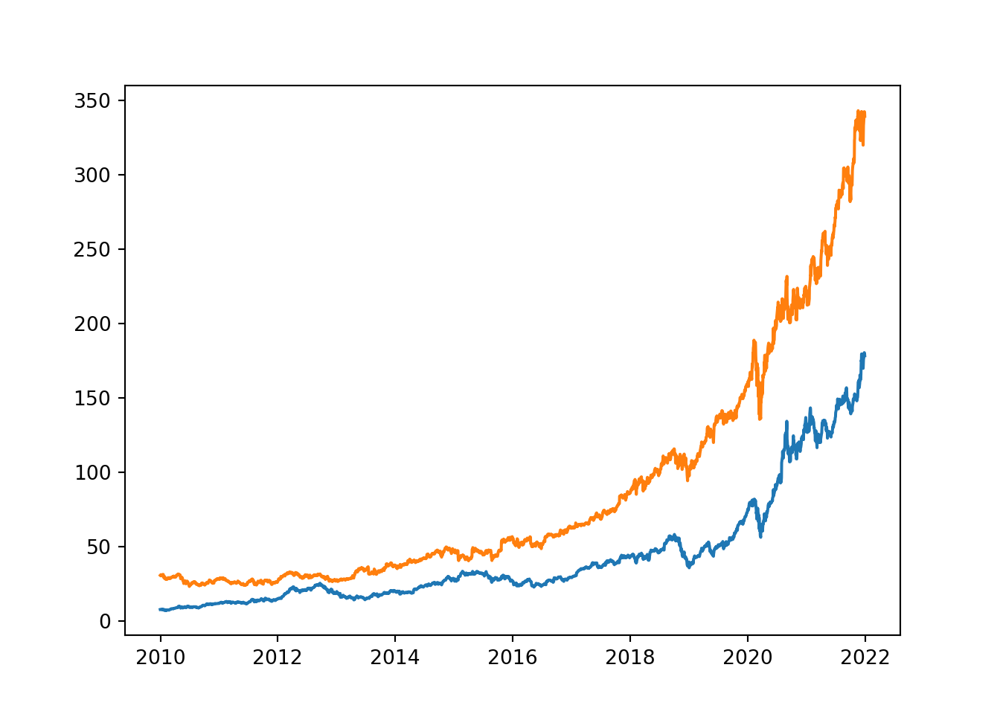

Chapter 2 Introduction
In this chapter, we learn how to retrieve data from two APIs. First, we retrieve price data from Yahoo! Finance.
2.1 Yahoo! Finance
Let’s start by importing the necessary packages.
import yfinance as yf
import pandas as pd
import numpy as np
import matplotlib.pyplot as pltThen, we need to specify three parameters: * the tickers * the start date * the end date
We download the data using yf.download. We only keep closing prices.
tickers = ['AAPL', 'MSFT']
start = '2010-01-01'
end = '2021-12-31'
data = yf.download(tickers=tickers, start=start, end=end, progress=False)['Close']
data.head()## AAPL MSFT
## Date
## 2009-12-31 7.526071 30.480000
## 2010-01-04 7.643214 30.950001
## 2010-01-05 7.656429 30.959999
## 2010-01-06 7.534643 30.770000
## 2010-01-07 7.520714 30.450001To access the latest observations, we use .tail().
data.tail()## AAPL MSFT
## Date
## 2021-12-23 176.279999 334.690002
## 2021-12-27 180.330002 342.450012
## 2021-12-28 179.289993 341.250000
## 2021-12-29 179.380005 341.950012
## 2021-12-30 178.199997 339.3200072.1.1 Plot
plt.figure()
plt.plot(data)
plt.show()
2.2 Returns
We can compute returns as:
\[ R_{i,t} = \frac{P_{i,t} - P_{i, t-1}}{P_{i,t-1}} \]
This can easily been done using the .pct_change() method. We also use .dropna() to suppress the first missing observation, lost due to the computation.
rets = data.pct_change().dropna()
rets.head()## AAPL MSFT
## Date
## 2010-01-04 0.015565 0.015420
## 2010-01-05 0.001729 0.000323
## 2010-01-06 -0.015906 -0.006137
## 2010-01-07 -0.001849 -0.010400
## 2010-01-08 0.006648 0.006897Alternatively, we can compute log-returns:
\[ LogR_{i,t} = \ln \left (\frac{P_{i,t}}{P_{i,t-1}} \right ) \]
logRets = np.log(data/data.shift(1)).dropna()
logRets.head()## AAPL MSFT
## Date
## 2010-01-04 0.015445 0.015302
## 2010-01-05 0.001727 0.000323
## 2010-01-06 -0.016034 -0.006156
## 2010-01-07 -0.001850 -0.010454
## 2010-01-08 0.006626 0.006873Let’s create our own function to compute returns. By default, this function computes “normal returns” but we can compute log-returns if log is set to True.
def compute_returns(df, log=False):
if log==True:
return np.log(df/df.shift(1)).dropna()
else:
return df.pct_change().dropna()